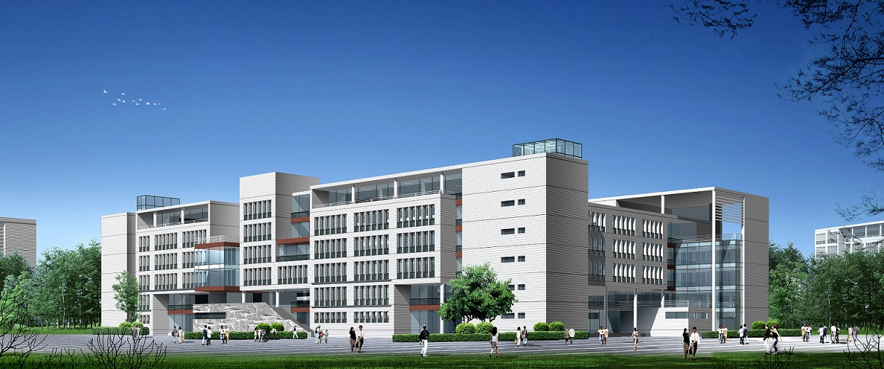

专业设置
- 计算机科学与技术
- 数据科学与大数据技术
- 信息安全
- 电子信息科学与技术
- 
学院简介
计算机科学与技术学院的前身可追溯到始建于1978年的电子计算机应用专业，1997年，原信电学院计算机及应用专业、数力系计算机软件专业、中国矿业大学计算中心合并，成立计算机科学与技术系，2002年9月在计算机科学与技术系的基础上成立了计算机科学与技术学院。学院设有计算机科学与技术、电子信息科学与技术、信息安全、数据科学与大数据技术四个本科专业；计算机科学与技术、信息安全为工程教育认证专业，
计算机科学与技术为教育部卓越工程师教育培训计划本科专业，计算机科学与技术、电子信息科学与技术两个本科专业为江苏省卓越工程师（软件类）教育培养计划试点专业。有计算机科学与技术一级学科博士学位和硕士学位整体授予权（涵盖计算机应用技术、计算机软件与理论、计算机系统结构三个博士点和硕士点）和培养研究生的学科、专业，有计算机技术和软件工程两个领域工程硕士授予权。设有计算机科学与技术博士后流动站。
现任领导
- 党委书记:尹新平 高级工程师 83591701 xpyin@cumt.edu.cn
- 院长、党委副书记:周勇 教授 83591702 yzhou@cumt.edu.cn
- 党委副书记:秦峰 助理研究员 83591708 qinfeng@cumt.edu.
- 副院长:林果园 副教授 83591707 lingy@cumt.edu.cn
- 副院长:吴刚 高级工程师 83591706 gzw@cumt.edu.cn